임상심리사-1급 (2016-10-01 기출문제)
1과목: 임상심리연구방법론
1. 평균이 30이고 표준편차가 5인 분포에서 원점수 25를 Z점수로 변환하면?
- -1
- 0
- 1
- 2
(정답률: 50%)

2. 다음 사례의 표본 추출 방법에 해당하는 것은?
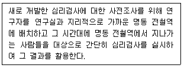
- 판단표본추출방법
- 할당표본추출방법
- 층화표본추출방법
- 편의표본추출방법
(정답률: 55%)
3. 명목 척도로 조사된 변수들에 대해 통계분석을 하고자 할 때 적합한 분석방법은?(오류 신고가 접수된 문제입니다. 반드시 정답과 해설을 확인하시기 바랍니다.)
- F 검정
- Z 검
- t 검정
- x3 검정
(정답률: 42%)
4. 표집오차에 관한 설명으로 옳은 것은?
- 표준편차의 제곱이다
- 완벽한 표집의 추정치이다.
- 완벽한 표집의 평균이다.
- 표본의 추정값과 모집단의 실제값 간의 차이다.
(정답률: 47%)
5. 아직 연구되지 않은 심리학적 특성 A가 무엇에 의해 발현되는지 알아보고자 한다. 이 경우 특성 A에 영향을 미칠 것이라고 생각되는 25개의 변인들을 대상으로 어떠한 분석을 실시하는 것이 가장 적합한가?
- 탐색적 판별분석
- 탐색적 요인분석
- 확인적 판별분석
- 확인적 요인분석
(정답률: 25%)
6. 상위 25%와 하위 25%에 해당하는 점수 간의 차이를 2로 나눈 값을 지칭하는 것은?
- 평균편차
- 사분편차
- 표준편차
- 표본편차
(정답률: 46%)
7. 다음 ( )에 알맞은 용어를 순서대로 나열한 것은?
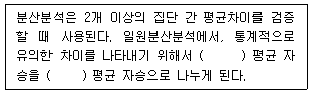
- 집단 간, 집단 간
- 집단 간, 집단 내
- 집단 내, 집단 내
- 집단 내, 집단 간
(정답률: 50%)
8. 과학적인 인과관계를 추정하기 위한 기본조건과 가장 거리가 먼 것은?
- 일관성이 있는 특정 공변성(covariation)
- 원인에서의 변화가 결과에 선행하는 시간적 순서
- 원인에서의 변화와 결과에서의 변화를 제외한 다른 현상의 통제
- 유사(spurious) 관계의 존재
(정답률: 54%)
9. 통계적 추론에서 추정에 대한 설명으로 틀린 것은?
- 통계적 추정이란 표본에서 얻은 통계량을 이용하여 모집단의 모수를 추정하는 것이다.
- 기술통계학도 엄격히 말하면 추리통계적 요소를 가지고 있다고 할 수 있다.
- 모수를 추정하기 위한 통계량을 추정치(estimate)라고 하고, 표본조사의 결과로 얻은 추정치의 측정값을 추정량(estimator)이라고 한다.
- 기술 통계학은 그 자신이 모수가 되는 것이고, 추리통계학은 그 자신이 모수가 되기 어려운 표본에서 모수를 추정하는 것이다.
(정답률: 46%)
10. 문제의 규명과 관련된 변수들의 관계를 명확히 하고자 할 때는 효과적이지만 일반적으로 사후적인 조사방법이기 때문에 그 결과가 결정적인 의미를 지니지 못하며 주로 시사적인 의미를 가지는 연구 방법은?
- 문헌조사
- 전문가 의견조사
- 실험조사
- 사례조사
(정답률: 46%)
11. 상관관계에 관한 설명으로 틀린 것은?
- 사례 수가 부족하면 상관의 크기가 작아질 수 있다.
- 두 변인 간에 곡선적인 관계가 있는 경우에 상관계수가 통계적으로 유의미하지 않게 나올 수 있다.
- 모집단으로부터 제한된 범위의 표본만을 표집하는 경우에 상관관계가 통계적으로 유의미하지 않게 나올 수 있다.
- 두 변인 간에 인과관계가 있다고 해서 두 변인 간에 반드시 상관관계가 존재하는 것은 아니다.
(정답률: 30%)
12. 질문문항의 형식에 의해 영향을 받는 효과로서 먼저 제시된 문항이 택해질 가능성이 높은 효과는?
- 망원경효과(telescope effect)
- 후광효과(halo effect)
- 초두효과(primacy effect)
- 최신효과(recovery effect)
(정답률: 50%)
13. 다음 중 횡단조사에 관한 설명으로 옳은 것은?
- 동일한 현상을 동일한 대상에 대해 반복적으로 측정하는 조사방법이다.
- 특정시점에서의 집단 간 차이를 연구하는 방법이다.
- 각 기간 동안에 일어난 변화에 대한 측정이 목적이다.
- 종단조사에 비해 표본의 크기가 상대적으로 작다.
(정답률: 54%)
14. 다중공선성(multicollinearity)이 의심스러운 상황과 가장 거리가 먼 것은?
- 중다상관제곱 값이 지나치게 크다.
- 표준화 회귀계수가 -1과 1을 벗어나는 경우가 있다.
- 회귀계수의 부호가 이론과 반대인 경우가 생긴다.
- 한두 개의 사례 수 첨가 또는 제거에 회귀계수가 크게 달라진다.
(정답률: 25%)
15. 순수실험설계(true experimental design)의 특징이 아닌 것은?
- 외생변수의 통제
- 독립변수의 조작
- 비동질 통제집단의 설정
- 실험집단과 통제집단에 대한 무작위 할당
(정답률: 46%)
16. 가설검증을 위한 유의수준을 0.01 대신 0.⑤로 설정하였을 때의 설명으로 옳은 것은?
- 2종 오류의 위험이 증가한다.
- 1종 오류의 위험이 증가한다.
- 1종 오류, 2종 오류 모두의 위험이 증가한다.
- 1종 오류, 2종 오류 모두의 위험이 감소한다.
(정답률: 10%)
17. 편차점수의 속성과 관계가 없는 항목은
- 특정한 사례가 평균으로부터 떨어져 있는 유클리드 직선거리이다.
- 원 변인에서 상수인 평균을 빼서 선형변환한 점수이다.
- 원 변인의 편차점수 간 상관은 0이다
- 원 변인의 편차점수들의 합은 0이다.
(정답률: 42%)
18. 요인분석에서 고유치(eigenvalue)에 대한 설명으로 가장 적합한 것은?
- 요인에서 각 측정변수로의 표준화 회귀계수
- 한 종속변수에 대한 여러 독립변수들의 설명량
- 전체 측정변수의 분산에서 각 요인이 설명하는 분산 정도
- 각 측정변수의 분산에서 추출된 요인들이 설명하는 분산 정도
(정답률: 34%)
19. 가설설정 시 유의해야 할 사항과 가장 거리가 먼 것은?
- 가설은 가치중립적인 성질을 띠어야 한다.
- 가설의 조작적 정의는 추상적인 성질을 띤다.
- 가설은 항상 실증적으로 검증이 가능해야 한다.
- 가설은 구체적인 성질의 것이어야 하며 그 뜻이 명확하여야 한다.
(정답률: 59%)
20. 우울증을 측정하기 위해 새로 개발한 검사가 기존의 불안증 검사와 상관이 낮은 것으로 나타났다면 이 검사는 어떤 종류의 타당도가 높은 것인가?
- 안면 타당도
- 수렴 타당도
- 변별 타당도
- 예언 타당도
(정답률: 54%)
2과목: 고급이상심리학
21. DSM-5에서 다음의 중상에 가장 적합한 진단은?
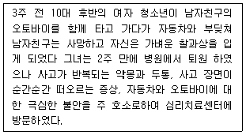
- 급성 스트레스 장애(acute stress disorder)
- 반응성 애착장애(reactive attachment disorder)
- 외상 후 스트레스 장애(Posttraumatic stress disorder)
- 적응 장애(adjustment disorder)
(정답률: 25%)
22. 아동 청소년기에 흔한 심리장애에 관한 설명과 가장 거리가 먼 것은?
- 분리불안장애는 집이나 애착 대상과의 분리에 대한 과도한 공포와 불안이다.
- 반응성 애착장애는 생후 9개월부터 만 5세 이전의 아동에게 주로 발생한다.
- 선택적 무언증은 증상이 1개월 이상 지속되는 경우이다.
- 만성 틱장애는 증상이 연속적으로 6개월 이상 지속되는 경우이다.
(정답률: 37%)
23. DSM 진단체계에 관한 설명과 가장 거리가 먼 것은?
- DSM보다 앞서 정신장애를 진단하는 체계가 있었다.
- DSM-2부터 다축 분류를 채택하였다.
- 정신지체는 DSM-4의 2축으로 분류된다.
- DSM-5에서 DSM-4에서 적용되었던 다축진단체계가 폐기되었다.
(정답률: 19%)
24. DSM-5에서 적응장애에 관한 설명과 가장 거리가 먼 것은?
- 분명히 확인될 수 있는 심리사회적 스트레스 사건에 대한 반응으로 부적응 증상이 나타나야 한다.
- 청소년의 경우 비행 행동이 나타날 수 있다.
- 우울 및 불안 등 정서적인 어려움을 보인다.
- 적응장애를 지닌 아동은 흔히 인지발달과 언어발달이 늦어지거나 상동적 행동문제를 나타낸다.
(정답률: 39%)
25. DSM-5에서 파괴적, 충동통제 및 품행장애의 특징을 짝지은 것은?
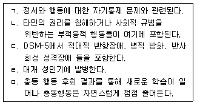
- ㄱ, ㄴ, ㄷ
- ㄱ, ㄴ, ㄹ
- ㄱ, ㄹ, ㅁ
- ㄴ, ㄷ, ㄹ
(정답률: 36%)
26. 정신분석이론에서 강박성 성격장애와 관련된다고 보는 심리성적 발달단계는?
- 구강기
- 항문기
- 남근기
- 성기기
(정답률: 50%)
27. 다음 증상에 가장 접합한 진단은?
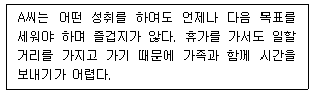
- 의존성 성격장애
- 편집성 성격장애
- 강박성 성격장애
- 회피성 성격장애
(정답률: 50%)
28. DSM-5에서 성기능부전(Sexual Dysfunction)에 해당하지 않는 것은?
- 성별 불쾌감(Gender Dysphoria)
- 조기사정(Premature Ejaculation)
- 발기장애(Erectile Disorder)
- 여성극치감장애(Female Orgasmic Disorder)
(정답률: 39%)
29. Clark의 인지이론에서 공황발작을 유발하는 핵심적 요인은?
- 신체 감각에 대한 파국적 오해석
- 자신에 대한 부정적이고 역기능적인 신념
- 공황발작 상황에 대한 학습된 무기력감
- 불안유발 상황에 대한 부적절한 방어기제
(정답률: 47%)
30. DSM-5에서성격장애에 관한 설명과 가장 거리가 먼 것은?
- B군 성격장애는 정서적, 극적인 성격 특성을 나타낸다.
- 반사회성 성격장애는 아동기 및 청소년기에 진단되며, 10세 이전에 품행장애를 나타낸 증거가 있어야 한다.
- 반사회성 성격장애와 자기애성 성격장애는 타인의 감정과 욕구에 대한 공감 능력 결여가 공통된 특징이다.
- 경계선 성격장애와 기분장애가 함께 나타날 때 자살 가능성이 높아진다.
(정답률: 39%)
31. 이상행동 및 정신장애의 판별기준과 가장 거리가 먼 것은?
- 주관적 불편감과 개인적 고통
- 법적 규제
- 적응적 기능의 저하 및 손상
- 문화적 규범의 이탈
(정답률: 42%)
32. Bandura의 사회적 합습 이론에 근거해 이상행동의 형성 혹은 치료를 설명한 예는?
- A군은 주인공이 각종 범죄를 저지르며 부자로 성공하는 영화를 시청한 후 이를 모방한 범죄를 저질렀다.
- B양이 백화점에서 큰 소리로 울고 때를 쓸 때마다 어머니는 B양을 진정시키기 위해 장난감을 사 주었다.
- 야뇨증을 보이는 C군에게 이불이 젖을 때마다 시끄럽게 울리는 부저를 설치하여 소변을 보도록 하였다.
- D양은 수업시간에 돌아다니지 않으면 선생님께 스티커를 한 장씩 받고 10장을 모으면 햄버거를 선물 받았다.
(정답률: 42%)
33. DSM-5의 신경인지장애에 대한 설명으로 가장 적합한 것은?
- 주요 신경인지장애(major neurocognitive disorder)는 2가지 이상의 인지적 영역에서 과거의 수행 수준에 비해 심각한 인지적 저하가 나타나는 경우를 말한다.
- 경도 신경인지장애(minor neurocognitive disorder)는 인지적 저하로 인해서 일상생활을 독립적으로 영위할 수 있는 능력이 없는 경우를 말한다.
- DSM-4에서 치매(dementia)로 지칭되었던 장애가 DSM-5에서는 그 심각도에 따라 경도 또는 주요 신경인지장애로 지칭되고 있다.
- 섬망(delirium)은 의식이 혼미해지고 주의집중 및 전환능력이 현저하게 감소하지만 기억, 언어, 현실판단 등의 인지기능에는 장애가 나타나지 않는 경우를 말한다.
(정답률: 37%)
34. 양극성 장애의 치료에 가장 적합한 행동은?
- 리튬 카보네이트(Lithium carbonate)
- 플록세틴(fluoxetine)
- 벤조다이아제핀(benzodiazepine)
- 알프라졸람(alprazolam)
(정답률: 39%)
35. 본드, 시너 등 휘발성 흡입제의 중독 증상과 가장 거리가 먼 것은?
- 현기증
- 불분명한 언어
- 운동조정 곤란
- 근육강직
(정답률: 39%)
36. 급식 및 섭식장애(feeding and eating disorders) 의 특성을 모두 고른 것은?
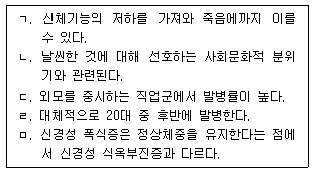
- ㄱ, ㄴ, ㄷ
- ㄱ, ㄴ, ㄹ
- ㄱ, ㄴ, ㄷ, ㅁ
- ㄴ, ㄷ, ㄹ, ㅁ
(정답률: 34%)
37. DSM-5에서 다음 사례에 가장 적합한 진단명은?
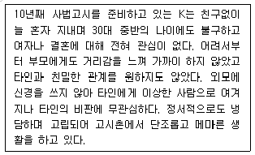
- 조현성 성격장애
- 회피성 성격자애
- 조현형 성격장애
- 자기애성 성격장애
(정답률: 37%)
38. DSM-5에서 조현병의 특성을 모두 고른 것은?
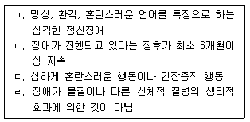
- ㄱ, ㄴ
- ㄷ, ㄹ
- ㄱ, ㄴ, ㄹ
- ㄱ, ㄴ, ㄷ, ㄹ
(정답률: 46%)
39. 우울증에 대한 Seligman의 학습된 무기력 이론에 관한 설명과 가장 거리가 먼 것은?
- 정적 강화의 결핍과 혐오적 불쾌 경험 증가에 의한 우울 유발 효과
- 반응과 결과 간의 반복적인 무관성 경험의 우울 유발 효과
- 상황에 대한 통제 불가능 경험의 우울 유발 효과
- 회피 및 도피조건 형성 패러다임에 근거하여 설명된 개념
(정답률: 16%)
40. DSM-5에서 다음 설명에 가장 적합한 진단은?
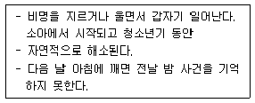
- 악몽장애(nightmare disorder)
- 야경증형(sleep terror type)
- 기면증(narcolepsy)
- 수면보행유형(sleepwalking type)
(정답률: 34%)
3과목: 고급심리검사
41. 시각-공간 구성능력과 가장 밀접한 관련이 있는 검사는?
- Wechsler 지능검사의 토막짜기 검사
- 손가락 두드리기 검사(Finger Tapping Test)
- 위스콘신 카드분류검사(Wisconsin Card Sorting Test)
- 스트룹 검사(STROOP Test)
(정답률: 37%)
42. 내적합치도를 확인할 수 있는 신뢰도 지수들로 짝지어진 것은?
- 동형검사신뢰도와 KR-20
- KR-20과 phi 계수
- KR-21과 Cronbach α 계수
- 반분신뢰도와 phi 계수
(정답률: 47%)
43. 지능에 대한 설명으로 틀린 것은?
- Spearman에 의하면, 지능은 일반요인(g요인)과 특수요인(s요인)으로 구성되어 있다.
- Gardner의 다중지능이론에 따르면, 지능은 여러 개의 독립적인 영역으로 구성되어 있다.
- Sternberg에 의하면, 지능의 3가지 측면은 분석적 지능, 창의적 지능, 그리고 실용적 지능이다.
- Wechsler에 의하면, 지능은 주변 환경을 효과적으로 처리해 나가는 영역별로 특수화된 지적 능력이다.
(정답률: 34%)
44. 아동용 심리검사에 관한 설명과 가장 거리가 먼 것은?
- CAT는 아동의 인지발달을 평가하기 위해 개발되었다.
- BGT는 시각-운동협응의 발달을 평가할 수 있다.
- HTP 검사에서 나무 그림은 사람그림보다 심층적 수준의 자기상을 반영하는 것으로 가정된다.
- Rorschach 검사에서 적절한 부분반응이 가능해지는 시기는 6-7세경이다.
(정답률: 37%)
45. 심리검사를 위한 면담에서 유의할 사항과 가장 거리가 먼 것은?
- 내담자의 비언어적 행동뿐만 아니라 면담자 자신의 반응에 대해서도 의식하고 있어야 한다.
- 면담자는 눈 맞춤, 안면 표정, 언어적 비언어적 반응을 통해 내담자에 대한 관심을 표현해야 한다.
- 내담자의 방어성은 “왜?”라는 이유를 묻는 질문을 통해 다루는 것이 권장된다.
- 면담자는 면담이 끝나기 5-10분쯤 전에 남은 시간을 내담자에게 미리 알려줌으로써 시간을 준수하도록 도와주어야 한다.
(정답률: 42%)
46. Rorschach 검사의 반응을 기호화할 때 포함하는 내용과 가장 거리가 먼 것은?
- 반응위치
- 결정인
- 반응순서
- 반응내용
(정답률: 39%)
47. MMPI-2에서 프로파일의 무효 가능성을 판별하는 데 사용되는 기준과 가장 거리가 먼 것은?
- 무응답 문항의 개수가 20개 이상
- VRIN 척도 혹은 TRIN 척도의 T 점수가 하나라도 80 이상
- 비임상적 장면에서 F 척도의 T 점수가 80 이상
- Fp 척도의 T 점수가 100 이상
(정답률: 39%)
48. MMPI-2에서 수검가자 모두 ‘그렇다’라고 응답했을 때 상승하는 척도를 묶은 것은?
- VRIN 척도 TRIN 척도
- TRIN 척도 F 척도
- VRIN 척도 Sc 척도
- TRIN 척도 Hy 척도
(정답률: 25%)
49. 심리검사 보고서 작성 요령에 관한 설명과 가장 거리가 먼 것은?
- 평가 목적은 정확하고 문제 지향적인 방식으로 언급한다.
- 평가절차에는 실시된 검사의 종류, 구조화된 면담의 종류, 면담시간을 포함한다.
- 행동관찰을 기술할 때 구체적 행동에 대한 임상가의 추론을 반영하여야 한다.
- 법적인 보고서에는 검사 점수를 포함시킨다.
(정답률: 28%)
50. Rotter가 제시한 것으로, 주제통각검사(TAT) 해석 시 검토해야 할 사항과 가장 거리가 먼 것은?
- 우세한 정서는 무엇인가?
- 반복되는 주제는 무엇인가?
- 통상적으로 사용되는 표현법은 무엇인가?
- 성별을 다루는 양식은 어떠한가?
(정답률: 47%)
51. 심리검사 결과를 피검사자에게 전달할 때 고려해야 할 사항과 가장 거리가 먼 것은?
- 피검사자의 교육정도
- 피검사자의 문화적 배경
- 피검사자의 정서적 반응
- 피검사자의 경제적 반응
(정답률: 37%)
52. 아동 및 청소년의 발달적 성숙이나 기능에 대한 검사인 사회성숙도 검사에서는 6가지 영역에 대한 발달정도를 측정한다. 다음 중 6가지 영역에 해당하지 않는 것은?
- 자조(SH)
- 이동(L)
- 의사소통(C)
- 욕구(N)
(정답률: 36%)
53. MMPI에서 2/4, 4/2 상승척도 쌍에 관한 임상적 해석과 가장 거리가 먼 것은?
- 가족 문제, 법적 문제, 알코올 남용 등의 문제로 치료 장면을 찾는다.
- 자살 사고, 자살 시도 가능성이 높다.
- 수동-의존적 성향이 강해 타인의 요구를 거절하지 못하지만, 소소한 불평이 많다.
- 자신의 문제 행동에 우울감, 죄책감을 보고하지만, 동일한 행동 문제가 반복된다.
(정답률: 20%)
54. 내용표집에 의해 오차변량이 발생하는 신뢰도 계수와 가장 거리가 먼 것은?
- 검사-재검사 신뢰도
- 동형검사 신뢰도
- 반분신뢰도
- 문항 내적 합치도
(정답률: 39%)
55. 신경심리검사 중 베터리형 검사와 개별검사의 특징에 관한 설명과 가장 거리가 먼 것은?
- 베터리형 검사의 단점은 일부 기능에 대해서는 필요 이상으로 자료를 제공하는 반면에 어떤 기능에 대해서는 불충분한 자료를 제공하게 된다.
- 베터리형 검사를 시행하는 경우 신속하게 변화되고 있는 신경심리학적 연구 추세에 따라 평가방법을 변형할 수 있다.
- 개별검사는 기본 검사에서 기능이 온전하게 평가되면 불필요한 검사를
- 개별검사의 선택과 실시, 해석과정은 베터리형 검사보다 훈련과 경험에 있어서 고도의 전문성을 요구한다.
(정답률: 39%)
56. 심리검사의 실시와 채점과정에서 일관성(동일성)을 확보하는 과정으로 가장 적합한 것은?
- 단일대상 검사 절차
- 심리검사의 표준화
- 임상적 평가 절차
- 심리검사의 신뢰도와 타당도 검증
(정답률: 37%)
57. 진단적(diagnostic) 면담과 치료적(therapeutic) 면담에 관한 설명으로 가장 거리가 먼 것은?
- 진단적 면담은 일상 진단을 내리기 위한 목적으로 진행된다.
- 진단적 면담은 상담장면에서는 내담자의 과거력을 수집하고 문제를 파악하여 적절한 상담자와 연결지어 주기 위한 접수 면담과 유사점이 있다.
- 전통적인 치료적 면담에서는 구조화된 방식이 우선시 된다.
- 치료적 면담은 보통 진단적 면담 이후에 이루어진다.
(정답률: 28%)
58. 운동성 가족화검사(KFD)에 대한 해석으로 가장 적합한 것은?
- 특정인물 밑에 선을 긋는 것은 그 인물에 대한 호감을 나타낸다.
- 우측에 그려진 인물은 내향성 및 침체성과 관련된다.
- 요지의 하단에 그려지는 인물은 가족 내 주도적인 인물을 나타낸다.
- 인물 간의 거리는 아동이 지각한 구성원 간의 친밀도나 심리적 거리로 해석된다.
(정답률: 39%)
59. Wechsler 지능검사의 소검사 중 다음 요인들과 가장 관련이 있는 것은?
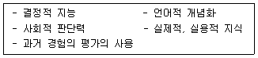
- 기본지식
- 어휘
- 이해
- 공통성
(정답률: 34%)
60. MMPI-2가 개발된 이유와 가장 거리가 먼 것은?
- MMPI의 임상척도들이 현대의 진단기준과 불일치하기 때문이다.
- MMPI의 문항 선정에서 사용된 예비문항의 폭이 좁아 임상가들이 중요하게 생각하는 성격특성을 충분히 반영되지 못했기 때문이다.
- 새로운 규준이 필요하기 때문이다.
- 시대에 어울리지 않거나 부자연스런, 그리고 남녀차별적인 문항들이 있기 때문이다.
(정답률: 22%)
4과목: 고급임상심리학
61. 자신, 타인, 세상에 대한 ‘반드시 -해야한다(should or must)'는 식의 불합리한 요구를 정서적 스트레스와 행동적 문제의 원인으로 보고 이를 치료하려는 접근법을 제안한 학자는?
- Beck
- Ellis
- Wolpe
- Eysenck
(정답률: 22%)
62. 신경심리학 영역에서 사용하는 주요 검사와 주평가 영역에 관한 설명으로 틀린 것은?
- Rey-Osterrieth Complex Figure Test: 시공간적 기억의 평가, 즉각 회상과 지연 회상 등 포함
- Wisconsin Card Sorting Test: 언어적 능력
- Purdue Pegboard Test: 정교한 시각-운동협응 능력
- Controlled Oral Word Association: 단어 유창성을 통한 전두엽 및 측두엽 기능 평가
(정답률: 24%)
63. 정신분석이론에 관한 설명과 가장 거리가 먼 것은?
- 정신결정론을 주장하며 무의식의 중요성을 강조한다.
- 자아는 실행기능을 담당하며 현실원리에 따른다.
- 방어기제가 언제나 부적응적인 것은 아니다.
- 초자아는 도덕적 판단자로서 의식으로만 이루어져 있다.
(정답률: 28%)
64. 임상심리학자의 역할 중 하나인 자문에 대한 내용과 가장 거리가 먼 것은?
- 고등학교 교장에게 회의시간에 자신에게 공개적으로 도전하는 교사에 대처하는 가장 좋은 방법에 대한 지침을 제공하는 것
- 소아과 의료진들에게 청소년들이 병동에서 다른 환자들과 성적인 문제를 일으키는 것을 줄이기 위한 프로그램을 개발해 주는 것
- 수많은 성격 갈등 때문에 비생산적이고 비효율적인 결과를 빛고 있는 어떤 회사의 팀 구성원들에게 서로 더 잘 지낼 수 있는 방법을 알려주는 것
- 내향적인 성격과 대인관계에 대한 두려움으로 인해 교우관계에 어려움을 겪고 있는 학생을 대상으로 지속적인 개입을 제공하는 것
(정답률: 28%)
65. 임상심리학의 과학자-전문가 모델에 관한 설명과 가장 거리가 먼 것은?
- 진단, 치료, 연구 외에도 일반심리학, 행동의 정신역동, 인접 학문 분야의 교육과정이 강조된다.
- Boulder 모델로 알려져 있으며, 박사학위 과정 취득을 요구한다.
- 임상심리학자는 일차적으로 심리학자이고 이후 임상가가 되어야 함을 강조하는 모델이다.
- 1970년대 Vail 모델로 계승되어 과학과 임상 실습을 모두 포용하는 특징을 보인다.
(정답률: 17%)
66. MMPI 혹은 MMPI-2에 관한 설명과 가장 거리가 먼 것은?
- 타당도 척도는 수검자의 동기와 수검 태도에 대한 이해하는 수단을 제공한다.
- 보충 척도는 연구용이므로 해석에는 활용하지 않는다.
- 상승한 척도 점수를 기반으로 해석하는 것은 과잉단순화의 오류 가능성이 높다.
- MMPI와 MMPI-2를 통해 정신역동적인 미묘한 상호작용에 대하 정보를 얻기는 힘들다.
(정답률: 31%)
67. 법정심리학자의 영역과 가장 거리가 먼 것은?
- 위험예측
- 아동양육권
- 배심원 선정
- 행정자문
(정답률: 24%)
68. 체계적 둔감화의 본질적인 치료 원리 및 정차와 가장 거리가 먼 것은?
- 이완 훈련
- 역조건 형성
- 도구적 조건형성
- 고전적 조건 형성
(정답률: 10%)
69. 연대별 한국의 주요 임상심리학적 사건에 관한 설명으로 틀린 것은?
- 1960년대: 병원 장면에 진출하여 심리평가를 주로 담당함
- 1970년대: 한국심리학회로부터 임상심리전문가 자격규정 정식으로 인증받음
- 1980년대: 정신요양원의 비인도적 처우 등을 개선하기 위하여 정신보건법을 제정함
- 1990년대: 정신보건 임상심리사 등 임상심리학의 법적권위를 부여받음
(정답률: 17%)
70. Rorschach 검사의 지표에 대한 해석적 의미로 가장 적합한 것은?
- Zf=0: 자아를 성찰하는 내성적 활동과 연관된다.
- FD: 복잡한 인지적 책략을 사용하여 과제에 접근하는 정도를 나타낸다.
- W:M의 비율: 자극상황을 전체적으로 다루려는 의욕 및 동기와 관련된다.
- CONFAB: 환경에 대한 태도가 매우 비관적임을 나타낸다.
(정답률: 24%)
71. 행동적 접근 및 인지행동적 접근에서 주로 사용하는 치료기법과 증상에 관한 설명으로 가장 거리가 먼 것은?
- 이완기법은 스트레스를 많이 경험하는 환자를 대상으로 하여 긴장된 스트레스 상황에서 긴장을 해결하기 위해 사용한다.
- 노출치료는 광장공포증이 있는 환자들에게 많은 사람들 앞에서 연설을 하도록 한다.
- 자기주장훈련은 극심한 소극성을 가진 환자들을 대상으로 하여 다른 사람들에게 자신이 요구하는 바를 말하도록 한다.
- 혐오치료는 인터넷 중독에 빠진 중학생을 대상으로 왜곡된 인지를 수정한다.
(정답률: 34%)
72. 치료성과와 관련 있을 것으로 일반적으로 생각되지만, 경험적으로 지지되지 않고 있는 환자-내담자 변인의 예와 가장 거리가 먼 것은?
- 남성 내담자들이 더 나은 치료 성과를 얻을 것이다.
- 내담자의 나이가 많으면 치료 결과가 나쁠 것이다.
- 동기수준이 높은 내담자만이 좋은 치료성과를 얻을 수 있을 것이다.
- 사회경제적 지위가 높은 내담자들이 더 나은 치료 성과를 얻을 것이다.
(정답률: 27%)
73. 행동평가의 기본 입장에 대한 설명으로 가장 적합한 것은?
- 직접적 평가방법의 강조
- 개인의 내현적 주관적 측면을 강조
- 행동은 현재의 결과보다 과거의 결과에 의해 지속됨
- 행동의 기저 원인을 강조
(정답률: 20%)
74. 지역사회심리학의 핵심 개념 중 생태학적 분석 수준에 관한 설명과 가장 거리가 먼 것은?
- 개인 수준에서 지역사회 심리학자들은 개인과 환경간의 관계를 연구한다.
- 조직은 보다 큰 거시체계의 세트이다.
- 미시체계는 개인이 가족, 친구, 동업자 등 타인과 함께 직접 참여하는 환경의 관계에 초점을 둔다.
- 지역은 다양한 미시체계의 조직으로 이루어진다.
(정답률: 25%)
75. Type A 행동패턴을 가진 사람들의 특성과 가장 거리가 먼 것은?
- 시간이 빨리 간다고 지각한다.
- 지연된 반응을 요구하는 과제에서 수행이 향상된다.
- 좌절하면 공격적이고 적대적이 된다.
- 피로감과 신체적 증상을 덜 보고한다.
(정답률: 19%)
76. 정신사회재활의 목표와 가장 거리가 먼 것은?
- 환자의 정신병적 증상의 경감
- 환자의 사회적 기능 회복
- 환자의 대인관계 기술 증진
- 환자의 인지기능 향상
(정답률: 0%)
77. 치료계획 수립에 관한 설명으로 가장 적합한 것은?
- 치료계획 수립에서 참여, 협의는 환자에 대한 책임감을 가지고 있는 가족 및 전문가에 한해야 한다.
- 치료계획의 수립은 잠정적 가설이며 불변의 계획이 되어서는 안 된다.
- 치료계획 수립에서 환자의 병리를 고려하여 치료자가 가장 적절한 계획을 세워 안내해주는 것이 바람직하다.
- 치료계획 수립 시 치료자가 가지고 있는 접근법에 대한 설명을 해주는 것은 환자로 하여금 방어를 일으킬 수 있는 것이기 때문에 치료자의 접근법을 개방해서는 안 된다.
(정답률: 24%)
78. 위기면접에서의 면접자 태도로 적합한 것을 모두 고른 것은?
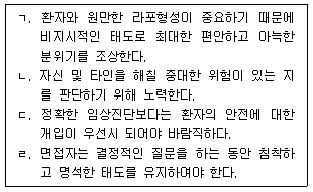
- ㄹ
- ㄱ, ㄴ, ㄷ
- ㄴ, ㄷ, ㄹ
- ㄱ, ㄴ, ㄷ, ㄹ
(정답률: 19%)
79. 다음에서 설명하는 대인관계에서의 심리적 기제 전체를 설명하는 정신역동적 용어는?
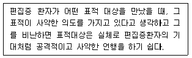
- 반사 전이
- 투사적 동일시
- 편집-분열 위상
- 양극성 자기
(정답률: 25%)
80. 심리학자의 윤리 규정 중 비밀정보의 공개가 허용될 수 있는 조건과 가장 거리가 먼 것은?
- 익명성이 보장되도록 조치한 경우
- 개인이나 기관의 동의
- 법적인 인증
- 교사의 요청
(정답률: 31%)
5과목: 고급심리치료
81. 성폭력 피해자의 치료를 위한 이론적 접근에 관한 설명으로 가장 적합한 것은?
- 손실이론: 폭력으로 인해 미래에 발생할 손실을 예측하는 것은 개인을 불안정하게 한다.
- 외상성 스트레스이론: 성인기 이후에는 성폭력이 발생하더라도 심리적 외상으로 존재하지 않는다.
- 학습이론: 성폭력을 당한 사람을 관찰하면 성에 대한 왜곡된 사고를 갖게 되며, 이후 성역할에 지장이 생긴다.
- 여성주의적이론: 남성의 가부장적인 태도가 성폭력에서의 핵심적인 문제 중 하나이며 사회문화적 상황에서 여성의 성피해를 이해해야 한다.
(정답률: 28%)
82. 음주문제를 평가하기 위해 고안된 CAGE 질문의 예로 가장 거리가 먼 것은?
- C: 음주 행동을 중단할 필요를 느낀 적이 있습니까?
- A: 당신의 음주 행동에 대해 누군가가 비난해서 괴로웠던 적이 있습니까?
- G: 당신은 음주행동을 축소하거나 숨기기 위한 거짓말을 한 적이 있습니까?
- E: 당신은 해장술의 필요성을 느낀 적이 있습니까?
(정답률: 28%)
83. 심리적 의존성은 있으나 신체적 의존성이 없는 약물로 바르게 짝지어진 것은?
- 대마초 - 알코올
- 대마초 - 코카인
- 아편 - 바리움
- 아편 - 코카인
(정답률: 19%)
84. 치료적 면접에 관한 설명으로 가장 적합한 것은?
- 일상기능이 심하게 손상된 환자의 경우, 고통스러운 사건이나 감정과 관련된 주제에 집중한다.
- 치료적 관계 유지를 위해서는 주기적으로 계획된 시간을 초과하여 면접을 시행한다.
- 치료자는 자신의 불안을 처리하기 위해서 주기적으로 자기노출을 한다.
- 내담자가 거절로 받아들이지 않도록 하면서 내담자와의 경계를 분명하게 설정한다.
(정답률: 34%)
85. 학교폭력 피해학생에 대한 위기 개입에서 치료자의 대응으로 가장 적합한 것은?
- 직업동맹을 형성한 후 폭력 피해 위험도를 평가한다.
- 신속한 대응을 위해 경청보다 직면 기법을 주로 사용한다.
- 자살 욕구를 자극하지 않도록 자살 사고에 대해 우회적으로 질문한다.
- 물리적 위협에 대해 먼저 다루고 심리적 외상을 다룬다.
(정답률: 24%)
86. 내담자의 임상적 진단을 통해 상담 계획을 수립하는 데 있어 임상가가 해야 할 업무과정과 가장 거리가 먼 것은?
- 수집된 여러 가지 정보는 수렴적으로 종합하고 검토해야 한다.
- 발병 전의 기능 수준이 치료 목표가 될 수 있으므로 발병 전의 발달 수준 및 가장 좋지 못했던 기능 수준을 평가하는 것이 바람직하다.
- 내담자의 취약성과 역기능 뿐 아니라 정신적 자산과 강점도 기술하여 제시 할 필요가 있다.
- 가족의 심리장애에 대한 태도가 치료 예후에 영향을 미치므로 임상가가 이해한 바를 가족과 적절하게 공유해야 한다.
(정답률: 17%)
87. 교류분석의 시간구조에 해당되지 않는 것은?
- 게임(game)
- 의식(ritual
- 결단(decision)
- 친밀성(intimacy)
(정답률: 17%)
88. 다음 사례에서 치료자의 초기개입 방향으로 가장 적절한 것은?
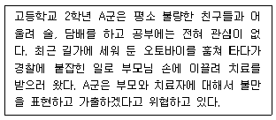
- A군에 대한 개인상담보다는 A군이 부모님과 화해할 수 있도록 가족상담을 최우선적으로 추진한다.
- 부모의 잘못된 양육방식을 변화시키려고 노력한다.
- A군을 비난하지 않고 가출과 관련된 고민을 충분히 논의한다.
- 불량한 친구들과 어울리지 못하도록 전학을 권유한다.
(정답률: 25%)
89. 수퍼바이저가 수퍼비젼 초기에 평가할 필요가 있는 상담자 특성과 가장 거리가 먼 것은?
- 상담자가 효율적으로 사용하고 있는 기술
- 상담자의 성격적 문제가 상담에 미치는 영향
- 상담자의 이론적 지식을 실제에 적용하는 능력
- 상담자 성장을 위한 상담자의 심리적인 외상경험
(정답률: 22%)
90. 노인 치매환자에 대한 일반적인 치료 접근방법과 가장 거리가 먼 것은?
- 가족들에게 치매의 본질, 진단, 예후 등에 대한 교육을 제공하고 신체적 부담이나 정신적 고통을 토론하며 지지해 주는 가족치료가 도움이 된다.
- 일단 치매가 시작되면 기억을 도울 수 있는 여러 가지 환경적 조치를 취한다 해도 효과적인 도움이 되지 못한다.
- 여러 가지 인지 과제를 통한 인지기능 훈련은 초기 치매 환자의 증상개선에 도움이 된다.
- 치매 환자의 보호자에 대한 지역 사회의 정서적, 물리적 지원은 매우 중요하다.
(정답률: 24%)
91. 알코올 중독의 미네소타 치료모델에 관한 설명과 가장 거리가 먼 것은?
- 12단계 원리에 근거한 치료 작업을 포함하고 있다.
- AA의 원리가 치료에 기본이 된다.
- 회복 중인 알코올, 약물 중독자가 상담을 제공한다.
- 낮 병원 중심의 프로그램이다.
(정답률: 29%)
92. 합리적 정서행동치료(REBT)에서 말하는 비합리적 사고 중 다음 내용과 관련된 것은?
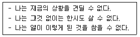
- 좌절에 대한 낮은 인내성
- 과잉일반화
- 자기비하
- 개인화
(정답률: 22%)
93. 현실치료의 특징에 관한 설명으로 가장 적합한 것은?
- 내담자가 보이는 증상에 대한 치료를 우선시해야 한다.
- 내담자가 치료과정에서 보이는 전이현상을 충분히 경험해야 한다.
- 내담자가 대인관계를 ‘통제’하려는 것에서 벗어나도록 도와야 한다.
- 자신에게 일어나는 모든 일에 대하여 내담자가 책임지도록 도와야 한다.
(정답률: 24%)
94. 손상, 불능, 장애에 관한 설명으로 가장 적합한 것은?
- 손상이나 불능은 시간과 공간에 의해 제한된다.
- 장애는 영구적인 것으로 절대적인 개인차가 존재한다.
- 시력에 문제가 있는 경우 상황에 따라 장애가 될 수도 있고 되지 않을 수도 있다.
- 인간이 능력있는 사람이 되느냐를 결정하는 것은 손상 또는 불능을 가지고 있는가 여부에 의해 결정된다.
(정답률: 17%)
95. 자기감찰(self-monitoring)에 관한 설명과 가장 거리가 먼 것은?
- 행동평가 혹은 인지행동평가 및 치료에서 주로 사용하는 방법이다.
- 저항이 매우 적고 신뢰할 수 있는 자료 수집이 가능하다.
- 역기능적 신념기록지 역시 자기감찰방법이다.
- 계산기나 초시계 등 도구를 사용하기도 한다.
(정답률: 31%)
96. 약물남용과 함께 정신장애를 갖고 있는 것으로 이중 진단된 내담자의 특성에 관한 설명과 가장 거리가 먼 것은?
- 약물 남용을 제외한 정신장애의 문제를 단독으로 가지고 있는 경우에 비해 훨씬 더 심각하고 만성적인 문제들을 경험한다.
- 약물 사용을 중단하게 되면 정신 장애도 동시에 소멸된다.
- 재발률은 일반 약물중독자들에 비해 상대적으로 높은 편이다.
- 약물남용과 정신장애를 치료받을 수 있는 기회를 모두 제공하여야 한다.
(정답률: 28%)
97. 인간중심 치료에 관한 설명과 가장 거리가 먼 것은?
- 일치성은 치료자가 진실하고 통합되어 있고 솔직하다는 뜻이다.
- 내담자를 한 인간으로서 진정하고 깊이 있게 관심을 가지되 이것은 무조건적이어야 한다.
- 치료자는 치료회기 동안 모든 상호작용에서 드러나는 경험과 감정을 민감하고 정확하게 이해하는 공감이 필요하다.
- 일치성, 무조건적 긍정적 관심, 공감적 이해는 연속적이라기보다는 실무율(all or none)적으로 존재한다.
(정답률: 34%)
98. 다음( )에 들어갈 용어로 알맞은 것은?
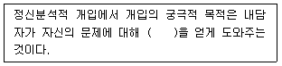
- 통찰
- 전이
- 역전이
- 카타르시스
(정답률: 17%)
99. 정신분열병 환자들의 인지 재활에 적용 가능한 기법을 모두 고른 것은?
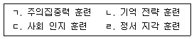
- ㄱ, ㄴ
- ㄱ, ㄷ, ㄹ
- ㄴ, ㄷ, ㄹ
- ㄱ, ㄴ, ㄷ, ㄹ
(정답률: 16%)
100. 다음 사례에서 A양에게 읽기 이해력을 증진시키기 위한 개입으로 가장 적합한 것은?
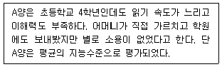
- 단어 하나하나에 집중하기보다는 덩어리나 군 단위로 읽도록 한다.
- 읽기의 목적이 무엇인지 파악하도록 한다.
- 배경음악을 튼 상태에서 혼자서 읽도록 한다.
- 기본 시선을 문서의 중앙에 두도록 한다.
(정답률: 28%)